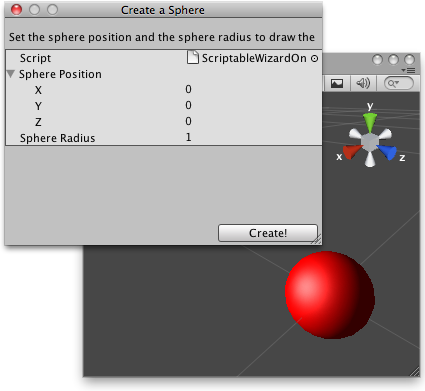

ScriptableWizard.OnDrawGizmos 当绘制Gizmos
function OnDrawGizmos () : void
Description描述
Called every frame when the wizard is visible.
当向导可见时每帧调用。
Use this to draw wizard Gizmos in the scene view while creating your wizard.
使用这个在场景视图绘制向导Gizmos，同时创建向导。
参见：Gizmos class.

Draws a sphere to visualize how it will be before creating the actual "Sphere" game object
它将在创建实际球体物体之前，绘制一个可视化球体。
// C#
// Creates a sphere where the gizmo is painted in the scene view.
//在场景视图gizmo被绘制的位置，创建一个球体
using UnityEngine;
using UnityEditor;
public class ScriptableWizardOnDrawGizmos : ScriptableWizard {
public Vector3 spherePosition = Vector3.zero;
public float sphereRadius = 1;
[MenuItem ("Example/OnDrawGizmos example")]
static void CreateWindow() {
ScriptableWizard.DisplayWizard(
"Create a Sphere",
typeof(ScriptableWizardOnDrawGizmos),
"Create!");
}
void OnWizardUpdate() {
helpString =
"Set the sphere position and the sphere radius to draw the gizmo in the scene view";
if(sphereRadius > 0) {
errorString = "";
isValid = true;
} else {
errorString = "Radius has to be greater than 0";
isValid = false;
}
}
void OnDrawGizmos () {
Gizmos.color = Color.red;
Gizmos.DrawSphere (spherePosition, sphereRadius);
}
void OnWizardCreate() {
GameObject createdSphere = GameObject.CreatePrimitive(PrimitiveType.Sphere);
createdSphere.transform.position = spherePosition;
createdSphere.transform.localScale = new Vector3(sphereRadius, sphereRadius, sphereRadius);
}
}最后修改：2011年6月25日 Saturday 15:05